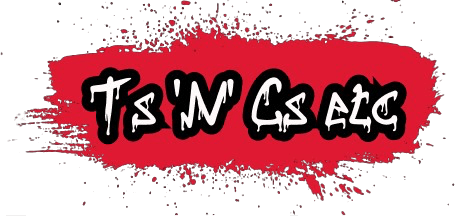
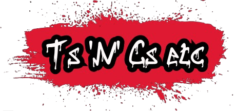
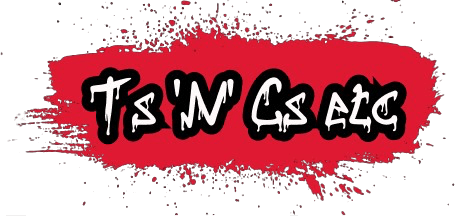
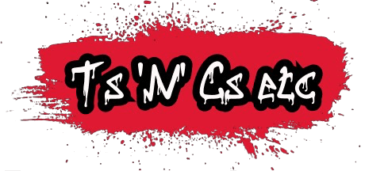

 

Hello! Welcome to my website and thank you for downloading my app!
So what’s the best way to use this app? Find a session that you can’t quite make it all the way through and keep coming back, throwing it at the beginning of your session (after warming up), and when you’re able to do that one with ease, move on to the next one! Or you can keep on that one and bring the power up! If you want to work on power, do a slow One to Eight! and hit every punch with everything you’ve got! If you want to see where I’m at, play the video above; as you’ll see, I start flaking just as it comes to an end. But I will be back!
If you want to post your session on your social media, just email me in the first instance then record your session but with the music on a speaker so I can hear it. When you send the video to me, I will overdub the actual music and shabam! you have a video!
Please connect with our social media on the “Contact” page! And link us in to anything Box 2D Beat!-related!